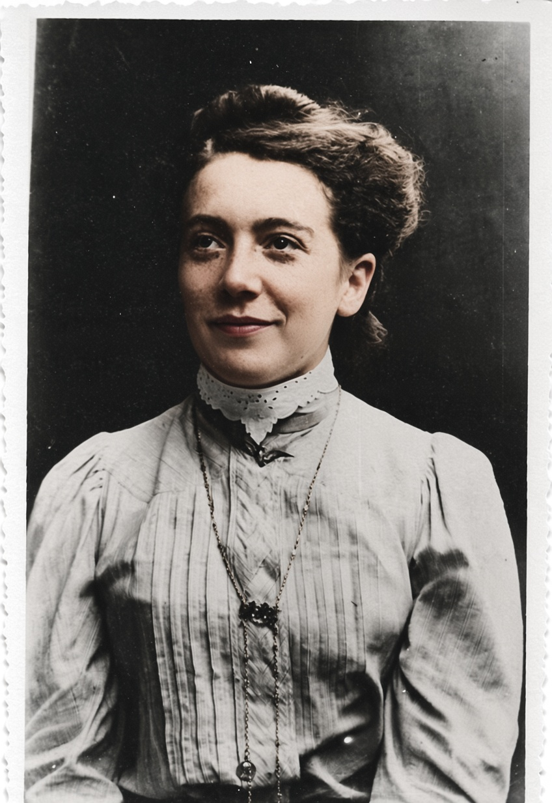
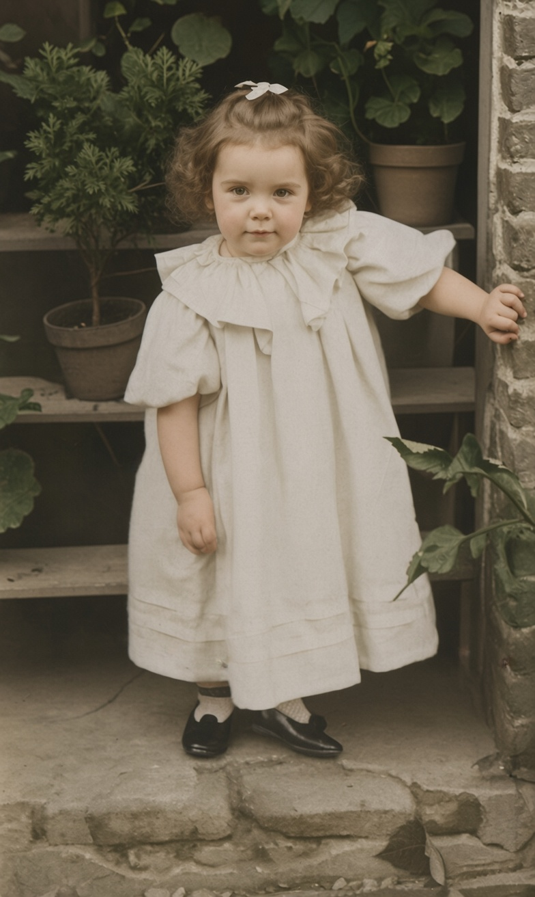
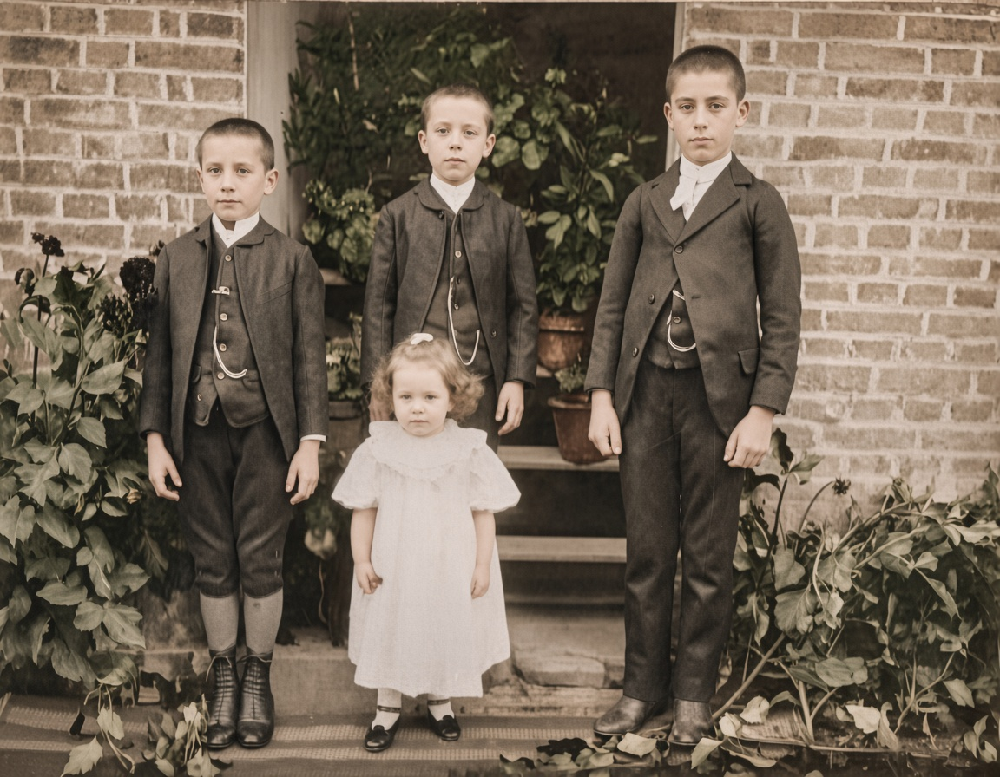
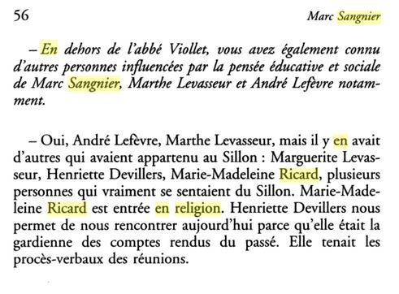
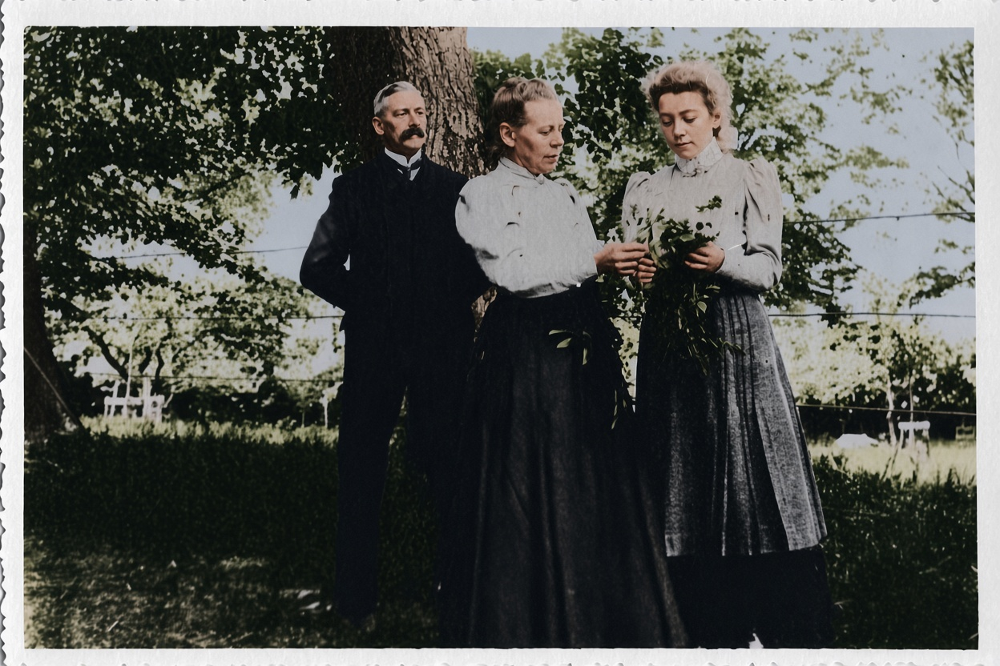
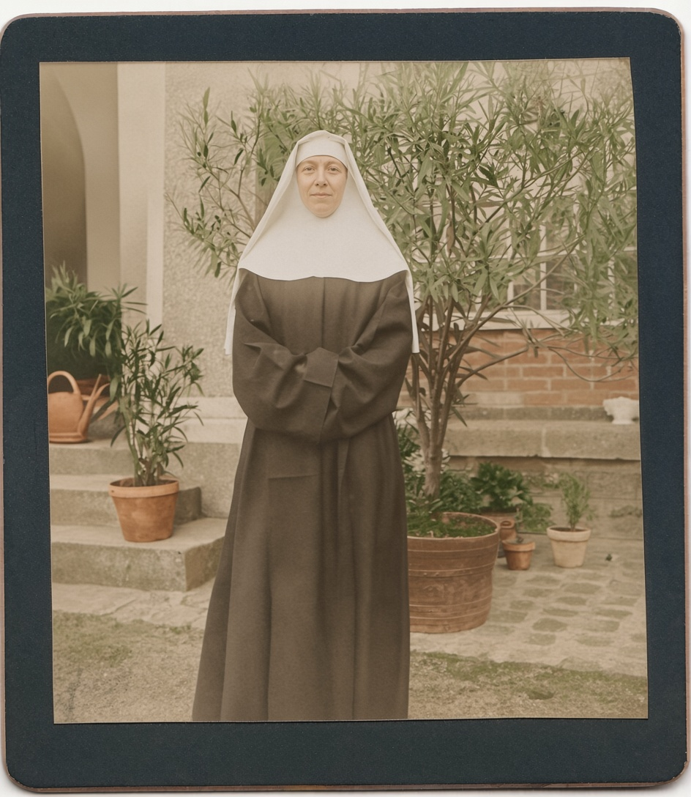
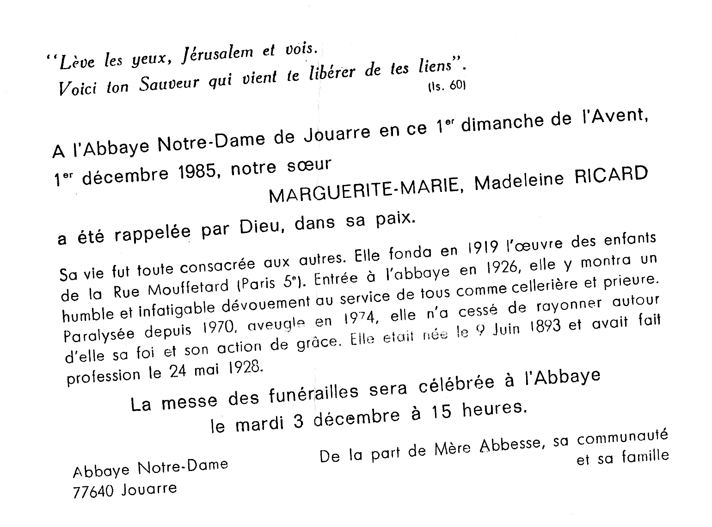
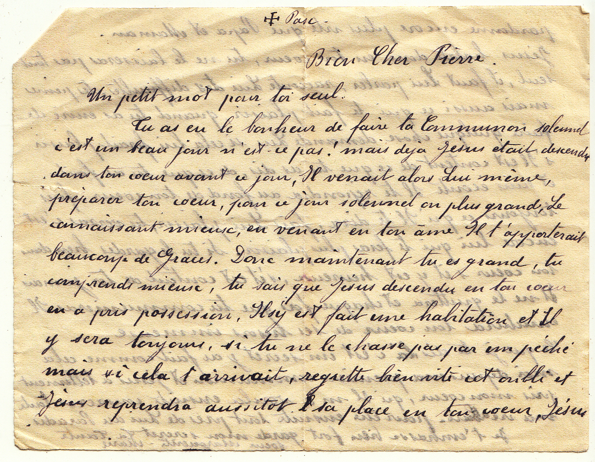
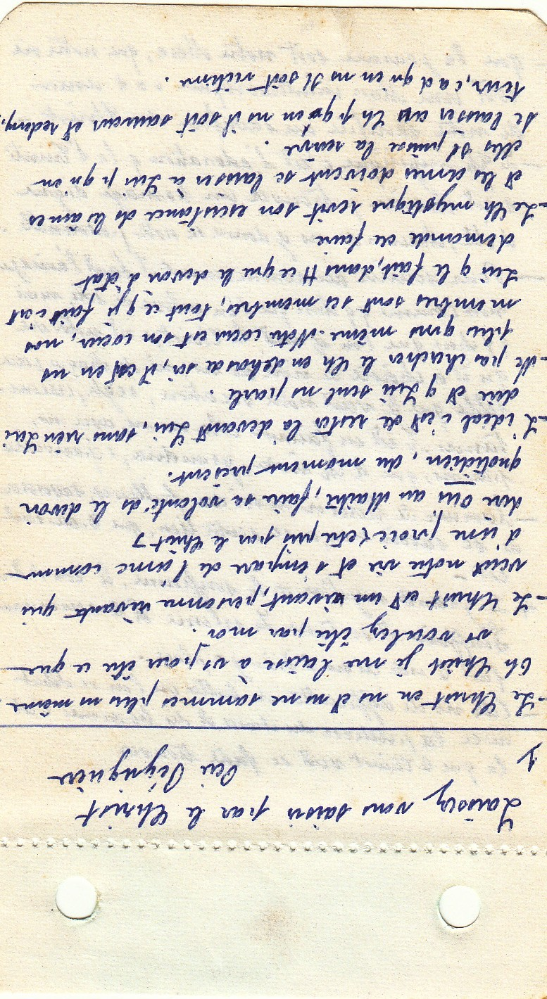
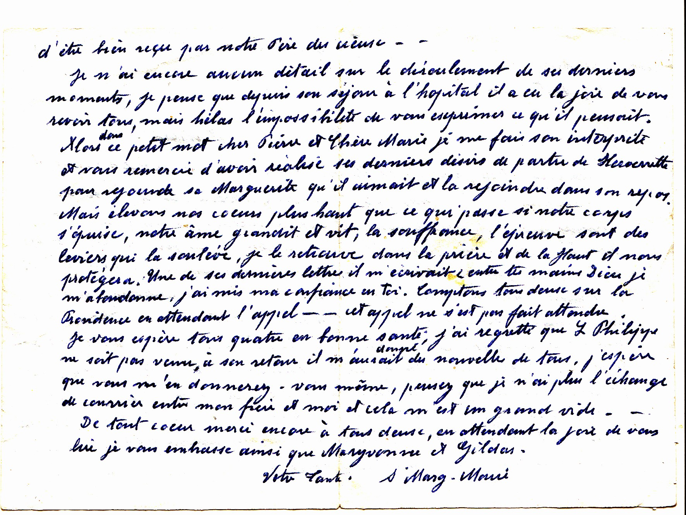

Notice biographique & familiale
9 juin 1893 — 1er décembre 1985
Du Sillon de Marc Sangnier et de la Mouffe de la rue Mouffetard à Paris, à la clôture de l'abbaye de Jouarre : itinéraire d'une vie donnée.

Sommaire
Marie-Madeleine Ricard naît le 9 juin 1893, un an à peine avant la fondation du Sillon par Marc Sangnier (1873–1950) — ce mouvement de démocratie chrétienne dans les archives duquel son nom finira, bien plus tard, par apparaître.1 Le Sillon voulait concilier catholicisme et idéal républicain, offrir aux ouvriers et aux étudiants un lieu de rencontre et d'éducation populaire, et fut, en son temps, l'un des plus vastes foyers de laïcs catholiques engagés dans la question sociale.2 Sangnier lui-même, ancien élève de Polytechnique, y voyait moins une œuvre confessionnelle qu'un mouvement « profondément religieux » sans être inféodé à la hiérarchie — position qui, en 1910, lui vaudra la condamnation, par la lettre pontificale Notre charge apostolique, et la dissolution du mouvement.3


C'est dans les cercles nés de cette effervescence, et plus précisément dans son prolongement parisien de la rue Mouffetard, que le nom de Marie-Madeleine Ricard resurgit, longtemps après, dans la mémoire d'un ancien du mouvement. Interrogé sur les femmes formées à « la pensée éducative et sociale de Marc Sangnier », le témoin en cite plusieurs qui « vraiment se sentaient du Sillon » — parmi elles, Marie-Madeleine Ricard — avant d'ajouter, sobrement, qu'elle « est entrée en religion ».4

Le terreau de cet engagement porte un nom familier à qui s'intéresse à l'éducation populaire parisienne : la Mouffe, du nom de la rue Mouffetard, dans le cinquième arrondissement. Tout commence en 1906, lorsqu'une jeune étudiante « sillonniste », Cathe Descroix, s'installe au 6 de la rue avec deux amies et fonde un petit groupe baptisé « Chez nous », dans un quartier où les conditions de vie sont alors particulièrement difficiles. Rattaché au Sillon, le groupe organise colonies de vacances, conférences, une bibliothèque, des sorties appelées « caravanes », puis, en 1920, installe son foyer au 76, rue Mouffetard — un local qui avait accueilli, avant la Première Guerre, une Maison des syndicats et une Université populaire où étaient venus parler Jean Jaurès et Léon Bloy, où Lénine lui-même aurait pris la parole.5

C'est dans cette maison, après avoir été fiancée, avant la guerre, à un jeune homme mort au front6, que Marie-Madeleine Ricard trouve sa place. En 1920, huit volontaires à temps plein et une trentaine d'amis à temps partiel font vivre « Chez nous » : Marguerite Walther s'occupe du cinéma et des mouvements féminins, André Lefèvre dessine en béton armé, Marthe Levasseur est couturière en chambre, Henriette Devillers tient le secrétariat — et Marie-Madeleine Ricard est chargée du restaurant, aux côtés de Renée Sainte Claire Deville, trésorière, et de Marie Raimbault, qui gère le bar.7 L'année précédente, en 1919, elle fonde elle-même l'œuvre des enfants de la rue Mouffetard — initiative qui prolonge, à l'échelle des plus jeunes du quartier, l'esprit d'entraide et d'éducation populaire de la maison.8
L'histoire de « Chez nous » n'est pas linéaire. Fin 1921, Cathe Descroix, restée à l'écart pendant la guerre, revient et reproche à la maison de s'être écartée du « souci constant de se conduire en parfaits chrétiens et en parfaits démocrates ». André Lefèvre, Marguerite Walther et une partie de l'équipe, pour leur part, s'orientent vers une neutralité religieuse plus stricte : « Si nous voulons être neutres, il faut supprimer [la prière et le Christ dans les activités] », écrit l'abbé Viollet, aumônier du groupe, dès 1919. La rupture est consommée au début de 1923 : une nouvelle association, la « Maison pour tous », se déclare à la Préfecture de la Seine, sur un principe de neutralité et d'ouverture à tous, sans distinction d'âge ni de race.13
Ce basculement — d'un mouvement encore marqué par l'engagement confessionnel du Sillon vers une « laïcité ouverte » — offre un contraste éclairant avec le chemin que prendra Marie-Madeleine Ricard : lorsqu'une partie de ses compagnons de la Mouffe s'oriente vers l'institution laïque et sociale (ancêtre, par la suite, des Maisons des Jeunes et de la Culture), elle rejoint, quelques années plus tard, la vie monastique. Le lien entre les deux trajectoires est chronologique ; les raisons de son choix, elles, restent du domaine de l'intime.
En 1926, Marie-Madeleine Ricard quitte la Mouffe et entre à l'abbaye Notre-Dame de Jouarre, en Seine-et-Marne — l'un des plus anciens monastères de France, fondé vers 630 par saint Ado (Adon), fils de saint Authaire, à l'instigation de saint Colomban. L'abbaye fut d'abord un monastère double, avant que sa branche féminine, placée sous l'autorité de la première abbesse, sainte Théodechilde, ne devienne seule pérenne ; au IXe siècle, sous l'impulsion de la réforme carolingienne, la communauté adopte la règle de saint Benoît.9 Ruinée pendant la guerre de Cent Ans, dispersée puis vendue comme bien national à la Révolution, l'abbaye fut rachetée et repeuplée par des moniales bénédictines qui l'occupent sans discontinuer depuis lors.10
Entrer à Jouarre en 1926, c'est entrer dans une communauté de vie entièrement contemplative, au sens que lui donnait alors le droit canonique de 1917 : une existence cloîtrée, rythmée par l'office divin et le travail, selon la maxime bénédictine ora et labora, et soumise à la clôture papale — cette discipline qui interdit, sauf exception, toute sortie du monastère et toute entrée de personnes étrangères dans l'enceinte réservée aux moniales.11 C'est cette forme de vie, retirée du monde et pourtant tournée vers lui par la prière, que Marie-Madeleine Ricard choisit à trente-trois ans, après une décennie d'engagement actif au service des plus pauvres du quartier Mouffetard. Elle y prend le nom de sœur Marguerite-Marie et prononce ses vœux le 24 mai 1928.8

Plus d'un demi-siècle de vie monastique à Jouarre fut placé sous le signe du service : celui de cellérière d'abord, celui de prieure ensuite. Ces deux charges, l'une pratique et l'autre spirituelle, sont définies par saint Benoît lui-même dans sa Règle — elles appartiennent au cœur le plus ancien de la tradition monastique bénédictine.
La règle de saint Benoît consacre tout un chapitre (le chapitre XXXI) à cet office : le cellérier — ou, au féminin, la cellérière — a la charge des biens matériels du monastère : provisions, cave, ferme, outils, distribution de la nourriture et des vêtements aux sœurs, accueil des pauvres et des hôtes qui se présentent à la porte. Benoît demande qu'elle soit choisie pour sa sagesse, sa maturité et sa sobriété, « comme un père pour toute la communauté », attentive à ne rien gaspiller et à ne laisser personne dans le besoin. C'est un office de confiance, exercé au cœur du temporel, qui suppose autorité douce et sens pratique — qualités dont on pourrait être tenté de voir une préfiguration chez la jeune femme qui, vingt ans plus tôt, tenait le restaurant de la Mouffe — sans que le lien soit autre chose qu'une hypothèse rétrospective.
La prieure, elle, est la première collaboratrice de la mère abbesse — celle qui la supplée en son absence, veille à l'observance régulière et à la discipline commune, et peut, dans certains monastères, avoir la charge d'une communauté dépendante ou d'une maison secondaire. Cumuler les deux charges, comme le fait sœur Marguerite-Marie, signale une confiance particulière de la communauté : c'est reconnaître à la fois un sens aigu de l'administration et une autorité spirituelle suffisante pour accompagner les sœurs dans l'observance de la Règle.
« Sa vie fut toute consacrée aux autres. […] Entrée à l'abbaye en 1926, elle y montra un humble et infatigable dévouement au service de tous comme cellérière et prieure. » Avis de décès, communauté de l'abbaye Notre-Dame de Jouarre, décembre 1985
La vieillesse de sœur Marguerite-Marie fut marquée par une double épreuve : paralysée à partir de 1970, elle perd la vue en 1974. L'avis de décès insiste sur ce qui, dans cette double infirmité, n'a rien retranché à son rayonnement : « elle n'a cessé de rayonner autour d'elle sa foi et son action de grâce ». Elle meurt à l'abbaye le 1er décembre 1985, précisément le premier dimanche de l'Avent — temps liturgique d'attente et d'espérance dont le texte même de l'annonce, tiré du prophète Isaïe, se fait l'écho : « Lève les yeux, Jérusalem, et vois. Voici ton Sauveur qui vient te libérer de tes liens » (Is. 60). Ses funérailles sont célébrées à l'abbaye le mardi 3 décembre 1985, à quinze heures, par la mère abbesse, sa communauté et sa famille.
Entre la rue Mouffetard de ses vingt ans et la clôture de Jouarre de ses dernières années, c'est bien la même ligne de conduite qui se dessine : celle d'une femme qui, du restaurant populaire de « Chez nous » à l'office de cellérière d'une abbaye millénaire, aura fait du service des autres — qu'ils soient enfants pauvres d'un quartier de Paris ou sœurs d'une communauté monastique — la forme constante de sa vie.

À la biographie établie par les actes et les témoignages, on peut adjoindre une source plus intime : l'écriture même de sœur Marguerite-Marie. Cette partie rassemble plusieurs échantillons de son écriture à différents âges de sa vie, avec une courte lecture graphologique pour chacun. Ces lectures s'attachent d'abord à ce qui est directement observable — calibre, inclinaison, marges, pression, régularité, organisation de l'espace — avant de proposer parfois une interprétation de ces traits. Cette interprétation est présentée pour ce qu'elle est : une lecture subjective, non un diagnostic. La graphologie n'est pas une méthode scientifiquement validée pour déduire la personnalité à partir de l'écriture ; ces remarques valent comme on dirait d'un portrait qu'il donne une certaine impression, sans prétendre en épuiser le modèle.
Ce feuillet, écrit sur un papier très fin (le recto se voit par transparence au verso), est adressé à son neveu et filleul, Pierre, à l'occasion de sa communion solennelle. Sœur Marguerite-Marie a alors une quarantaine d'années, et environ quatre ans de profession religieuse depuis ses vœux de 1928. Le ton, tout de tendresse spirituelle, est celui d'une marraine ou d'une tante attentive à la vie intérieure de l'enfant.

L'écriture est de calibre régulier, posée et constamment inclinée à droite de façon modérée. Elle progresse par petits groupes de lettres — liées en guirlandes légères à l'intérieur de chaque groupe — avec des levers de plume fréquents et délibérés entre eux. Ce rythme groupé, ni très lié ni franchement juxtaposé, évoque une pensée qui avance par séquences : analytique sans être saccadée.
Les marges révèlent une tension caractéristique : légère marge à gauche, absence totale à droite, parfois quelques mots tassés en fin de ligne — le besoin de tout dire l'emporte sur le souci de l'espace, mais sans jamais déborder sur les lignes voisines, qui restent parfaitement distinctes.
Les zones sont inégalement investies : les jambages sont prolongés, les hampes longues mais simples, sans boucle ni ornement. La zone médiane reste maîtresse. Les majuscules, courtes et directes, refusent tout apparat. Les barres de t, lancées et s'affinant vers la droite, suggèrent une volonté active, voire un certain élan dans l'action.
Les formes fermées (a, o bien clos) côtoient des formes ouvertes (n, m en guirlande, e et s étroits mais non crispés) : fermeté discrète sur ce qui tient au fond, ouverture réelle dans la relation. Les finales courtes et les initiales directes confirment une économie du geste : ni effacement ni démonstration.
L'ensemble donne l'image d'une personnalité structurée et constante, à l'affectivité réelle mais contenue, capable d'engagement durable sans ostentation — cohérente, en somme, avec ce que la lettre dit d'elle-même.
Ce carnet n'est ni un journal intime ni un relevé de lecture isolé : c'est un cahier de notes spirituelles, tenu au fil de plusieurs sources. Le nom du Père Peyriguère12, cité en ouverture, y voisine avec des renvois à d'autres maîtres spirituels — l'Imitation de Jésus-Christ, saint François de Sales, le carme Paul-Marie de la Croix — et des numéros de référence qui trahissent une compilation progressive plutôt qu'une lecture unique. L'écriture, faite de phrases nominales, d'abréviations et de formulations condensées, organise cette matière par grands thèmes : la prière, la Messe et le sacrifice, l'abandon, l'action de l'Esprit Saint, le renoncement, la vie contemplative, le moment présent. Mais sœur Marguerite-Marie ne recopie pas mécaniquement : elle s'approprie peu à peu cet enseignement, jusqu'à la résolution personnelle et à la prière directement adressée au Christ — « Est-ce qu'aujourd'hui j'ai fait ce que le Christ aurait fait ? », « Ô Bon Maître, faites que j'en arrive à souffrir avec joie... ». Ce carnet, écrit d'abord pour elle-même, sera plus tard offert à son filleul.

Cette analyse ne porte que sur les trois premiers feuillets du carnet.
Première feuille (fiche unique). L'écriture est petite, serrée, sans marges, structurée en paragraphes avec retraits réguliers : ce n'est pas une mise en page pour autrui mais une organisation pour soi, une pensée qui se donne sa propre architecture intérieure. Les abréviations fréquentes (Ch pour Christ, ns pour nous, q pour que) confirment que l'outil graphique suit une pensée plus rapide qu'elle — on note, on ne rédige pas.
Le trait est épais (stylo-bille), les formes assez anguleuses, les finales courtes, les initiales directes : l'économie du geste observée trente ans plus tôt s'est accentuée, toute dépense inutile a disparu. Les barres de t lancées subsistent — l'élan volontaire est intact. L'absence totale de fioritures, chez quelqu'un qui écrit manifestement beaucoup et depuis longtemps, est éloquente : aucune complaisance envers soi-même.
La tenue de ligne est la variable la plus informative : majoritairement horizontale ou légèrement concave, elle marque une maîtrise réelle, mais avec des passages montants qui trahissent des moments d'élan ou d'intensité dans la réflexion — la ligne suit l'état intérieur plus qu'elle ne le gouverne.
Deuxième feuille (deux pages). Le désordre relatif s'installe : irrégularités de calibre, lignes tantôt serrées tantôt plus aérées, mouvement général plus concave à montant. On n'est plus dans la même concentration. Soit ces pages ont été écrites dans un autre moment de la journée ou de la retraite, soit elles suivent chronologiquement la première et la fatigue ou l'intensité émotionnelle ont légèrement desserré le contrôle. Ce n'est pas une dégradation — c'est une écriture qui respire différemment.
Évolution sur trente ans. Ce qui frappe, c'est moins le changement que la continuité dans l'épurement. La posture graphique d'ensemble — inclinaison modérée, finales courtes, initiales directes, absence d'ornement, maîtrise de la ligne — est reconnaissable d'un document à l'autre. Mais là où la lettre de jeunesse gardait encore une certaine ampleur (jambages prolongés, espaces intermots larges, calibre généreux), les notes de la maturité ont rétréci vers l'essentiel : moins de place, moins de geste, plus de densité. L'écriture de la jeunesse disait je vais vers l'autre ; celle de la maturité dit j'ai trouvé où aller. Ce que le contenu spirituel de ces notes exprime en mots, la graphie l'exprime en forme.
Aucune écriture ne se lit pourtant hors de ce qui l'a formée : chacune porte, indissolublement mêlées, la trace d'une éducation, d'un milieu et d'une époque, et celle d'une personne. On y retrouve ici les marques d'une formation scolaire typique de cette époque et de ce milieu bourgeois provincial : une écriture apprise dans un cadre discipliné, où la sobriété formelle était érigée en vertu et où tout ce qui aurait pu ressembler à une affirmation de soi par le geste était découragé.La régularité, l'économie, l'absence de fioriture relèvent donc autant d'un marqueur de génération et de milieu que d'une inclination personnelle. Ce qui est en tout cas observable au-delà du type, c'est l'organisation soignée des notes — retraits, structuration en paragraphes, abréviations systématiques — et la constance de cette posture graphique sur trente ans. Qu'il faille y voir un trait de personnalité ou simplement les effets d'une même formation et d'une même habitude d'écriture, c'est une question à laquelle les documents ne permettent pas de répondre.
Une dizaine d'années séparent cette lettre de la précédente. Sœur Marguerite-Marie y écrit à Pierre et à son épouse Marie, au lendemain de la mort de son propre frère. Le document est daté de 1971. L'avis de décès situe sa paralysie à partir de 1970, mais l'écriture de cette lettre n'en porte aucune trace visible — la date exacte du début de l'infirmité reste incertaine.

En 1971, à 78 ans, l'écriture ne trahit aucune fatigue : les traits fondamentaux — petitesse, régularité, inclinaison constante, formes fermées sur les o et a, m ouverts, jambages longs, barres de t lancées, lettres groupées — sont intacts et immédiatement reconnaissables. Deux légères évolutions méritent attention : la marge gauche se réduit progressivement au fil de la page, comme si l'élan du début se tempérait en s'intériorisant, tandis que la marge droite, désormais tenue mais sans rigidité, marque une retenue nouvelle — l'urgence de tout occuper s'est apaisée. Ce qui ressort au fond, c'est moins l'absence de vieillissement que la remarquable cohérence d'une écriture qui, sur quarante ans, n'a jamais été une performance mais une manière d'être.
Cette notice s'appuie sur quatre pièces d'archives familiales, complétées par des recherches sur le contexte historique du Sillon et de l'abbaye de Jouarre.